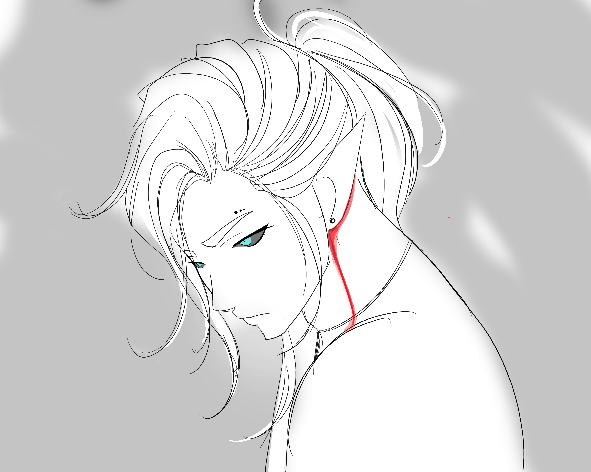

You leave the space within the thicket with a few of the branches claiming some of your hair in exchange
for some of its leaves.
You don't approach quietly but you go unnoticed as you begin to realize how much of an uproar you were
walking into. All four
faces are recognizable but you are having a hard time recollecting their names. You think that the one
in the middle is “Ulf'ren.”
You stop before getting too close and try to get a better look at everyone's faces…
Is that blood?...

A sanguineous streak flows from his collar bone to just behind his ear. While faint, you pick up on the subtle but unmistakable sweet smell of iron. But why is he just standing there? You notice his intense gaze fixed the ground, almost like a child being scolded. Following his line of sight, there are about five or six bolbaena blooms strewn about. The site almost takes your breath away. You've been searching for what feel like days and you've only managed to find one bloom. For a moment, you contemplate running in to grab them, entertaining the thought of a fight, and calculating your exit strategy. It looks like things are about to get more physical than they already are anyway…
Is it worth it?
Ulf'ren just stares silently at the ground and the others continue to shout.
“This is the last time we're asking nicely, Ulf'ren, either work with us or we make you regret it…”
“It looks like that hit didn't smack enough sense into him, maybe we should finish the job and take what he has.”
“It looks like that hit didn't smack enough sense into him, maybe we should finish the job and take what he has.”